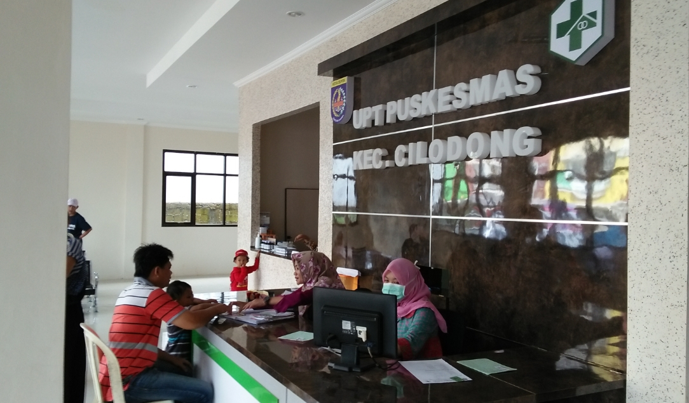
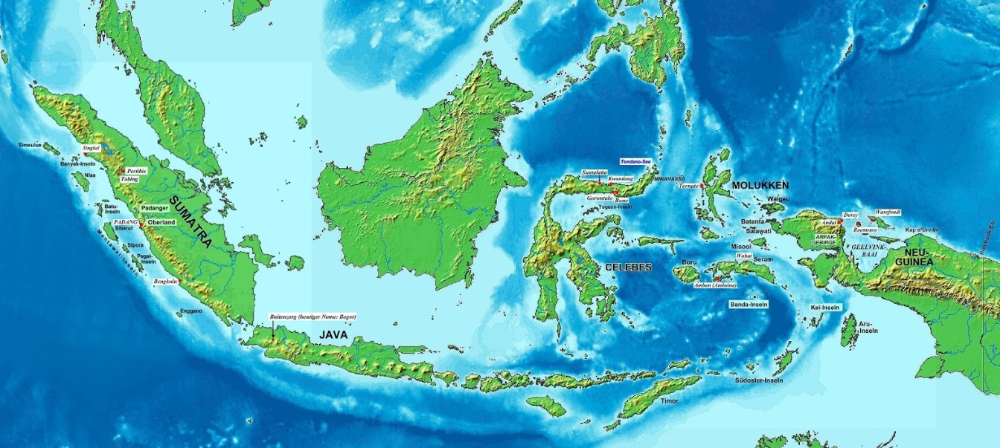
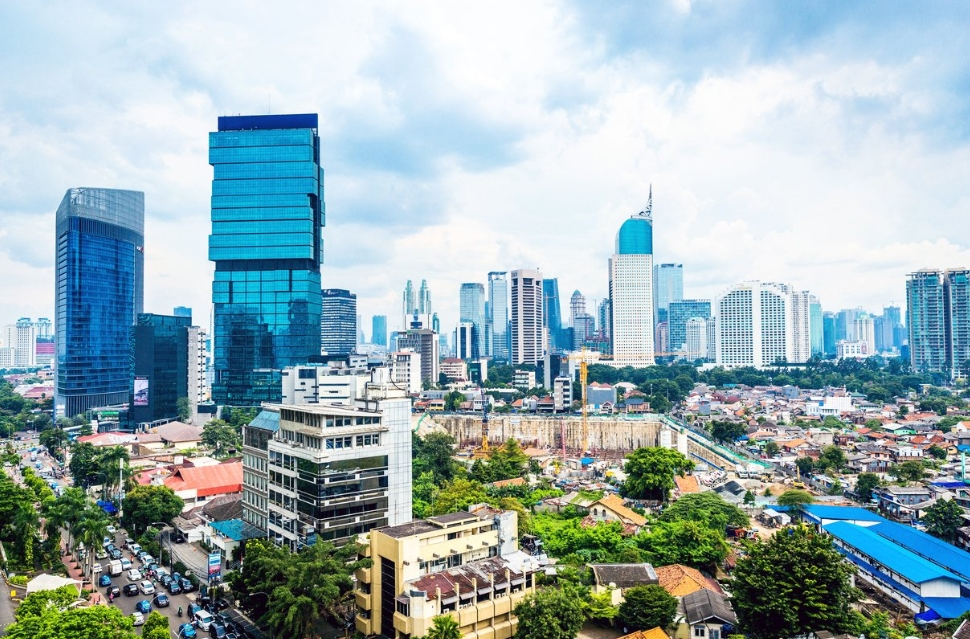
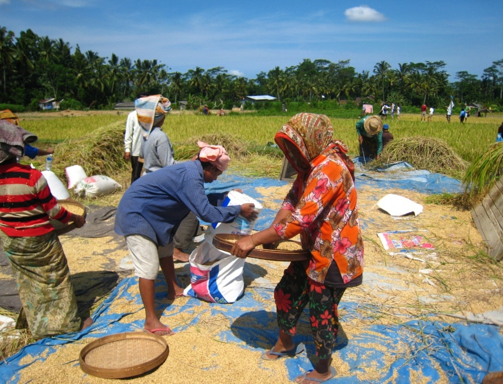

Pengertian Otonomi Daerah
Otonomi daerah adalah hak, wewenang, dan kewajiban daerah otonom untuk mengatur dan mengurus sendiri urusan pemerintahan dan kepentingan masyarakat setempat sesuai dengan peraturan perundang-undangan. Secara harfiah, otonomi daerah berasal dari kata otonomi dan daerah. Dalam bahasa Yunani, otonomi berasal dari kata autos dan namos. Autos berarti sendiri dan namos berarti aturan atau undang-undang, sehingga dapat diartikan sebagai kewenangan untuk mengatur sendiri atau kewenangan untuk membuat aturan guna mengurus rumah tangga sendiri. Sedangkan daerah adalah kesatuan masyarakat hukum yang mempunyai batas-batas wilayah.
Dasar Hukum
- NRI 1945 Pasal 18 ayat 1-7, Pasal 18A ayat 1-2, Pasal 18B ayat 1-2
- Tap MPR RI No. XV/MPR/1998 tentang Penyelenggaraan Otonomi Daerah, Pengaturan, pembagian, dan Pemanfaatan Sumber Daya Nasional yang Berkeadilan, serta perimbangan keuangan Pusat dan Daerah dalam Kerangka NKRI
- Tap MPR RI NO. IV/MPR/200 tentang Rekomendasi kebijakan dalam Penyelenggaraan Otonomi Daerah
- UU No. 32 tahun 2004 tentang Pemerintahan Daerah
- UU No. 33 tahun 2004 tentang Perimbangan Keuangan Antara Pemerintah Pusat dan Pemerintah Daerah
- UU No. 23 tahun 2014 tentang Pemerintah Daerah
Asas Otonomi Daerah
Berdasarkan Undang-Undang Nomor 23 Tahun 2014 tentang Pemerintah Daerah, terdapat tiga jenis penyelenggaraan urusan pemerintahan yang menjadi dasar bagi Pemerintah Daerah dalam pelaksanaan Otonomi Daerah, yaitu asas Desentralisasi, Dekonsentrasi, dan Tugas Pembantuan.
-
Desentralisasi
Merupakan wewenang yang diberikan oleh pemerintahan pusat untuk pemerintahan daerah dalam mengurus rumah tangganya sendiri.
-
Dekonsentrasi
Maksud dari asas ini ialah pemberian wewenang dari pemerintahan pusat kepada alat – alat mereka yang berada di daerah untuk melakukan penyelenggaraan urusan tertentu yang telah ditetapkan. Dengan kata lain, wewenang didelegasikan.
Tanpa kehilangan wewenangnya, pemerintah daerah akan melaksanakan tugas atas nama pemerintah pusat. Penyebaran wewenang diberikan pada petugas – petugas yang telah ditunjuk di setiap wilayah untuk selanjutnya diberikan tugas administratif atau tata usaha untuk keberlangsungan penyelenggaraan negara.
-
Tugas Pembantuan
Asas ini berdasarkan pada penugasan suatu urusan dari pusat ke daerah yang lebih rendah tingkatannya. Misalnya dari pemerintah pusat ke kabupaten atau kota untuk melakukan kewenangan pusat yang juga sudah menjadi kewenangan daerah. Tentang Tugas Pembantuan ini semua sudah diatur dalam undang – Undang Nomor 5 Tahun 1974, (desa membantu dalam urusan pemerintahan yang ditugaskan daerah).
Ada dua hal yang terkandung dalam tugas pembantuan ini, yaitu adanya penyiratan antara hubungan atasan dan bawahan. Dimana atasan adalah pemerintaha pusat, dan pemerintahan daerah berlaku sebagai bawahan yang membantu pusat untuk melaksanakan tugasnya dalam menyelenggarakan negara.
Prinsip Otonomi Daerah
Terdapat tiga butir prinsip yang diterapkan untuk menjalankan Otonomi Daerah. Selengkapnya adalah sebagai berikut ini:
-
Otonomi Seluas-luasnya
Prinsip ini dimaksudkan agar daerah diberikan wewenang untuk melakukan pengurusan serta pengaturan terhadap urusan pemerintahan yang mencakup semua bidang. Akan tetapi masih ada batasan tertentu yang bukan merupakan ranahnya karena sudah melampaui dari urusan yang bukan sekedar urusan daerah, misalnya politik luar negeri dan urusan keamanan nasional. Pusat wajib andil untuk hal ini.
-
Otonomi Nyata
Adalah prinsip otonomi yang dimana setiap daerah diberi kewenangan untuk penanganan urusan pemerintahan yang didasari oleh wewenang, tugas, dan juga kewajiban yang telah ada. Hal ini berpotensi agar daerah tersebut dapat tumbuh, terus hidup, dan dengan potensi serta ciri khasnya ia dapat berkembang.
-
Otonomi Bertanggung Jawab
Dalam penyelenggaraannya, prinsip tanggung jawab wajib untuk diberdayakan. Semuanya sesuai dengan tujuan dan maksud dari pemberian otonom pada daerah yang bersangkutan guna mensejahterakan rakyatnya.
Tujuan Otonomi Daerah
Penerapan otonomi daerah memiliki beberapa tujuan yang ingin dicapai oleh pemerintah. Berikut ini adalah beberapa tujuan yang ingin dicapai:
-
Pelayanan kepada masyarakat menjadi semakin baik
Apabila segala macam hal hanya bisa dilakukan dalam pemerintahan pusat, coba bayangkan betapa repotnya orang – orang dan pemerintah itu sendiri. Orang di daerah harus pergi ke Jakarta hanya untuk mengurus dokumen – dokumen sederhana seperti dokumen kependudukan. Bayangkan juga seberapa banyak antriannya jika semua orang di Indonesia ini harus mengurus segala hal dalam satu tempat saja.
Dengan adanya Otonomi Daerah, segala hal bisa menjadi lebih mudah untuk masyarakat. Pemerintah pun lebih mudah dalam melakukan pengontrolan karena sudah dibantu oleh alat – alat kelengkapan yang ada di daerah.
-
Pengembangan kehidupan demokrasi
Demokrasi sendiri bisa diartikan penyelenggaraan suatu negara berpusat dari, untuk, dan oleh rakyat. Dengan adanya otonomi, demokrasi lebih mudah untuk diterapkan. Apalagi dengan kondisi wilayah Indonesia yang sangat besar. Jika ada aspirasi dari rakyat semua bisa ditampung di pemerintahan daerah terlebih dahulu untuk selanjutnya bisa disampaikan ke pusat untuk ditindak lanjuti.
-
Mewujudkan Keadilan Nasional
Rasanya seperti tidak mungkin untuk mewujudkan keadilan nasional seadil – adilnya di negara ini jika hanya dilakukan oleh pemerintah pusat saja. Berdasarkan latar belakang, geografis, dan masyarakat yang beraneka ragam, untuk mewujudkan keadilan nasional bukan perkara yang mudah.
Dengan adanya Otonomi Daerah, pemerintah daerah bisa lebih terfokus untuk daerahnya masing – masing keadilan seperti apa yang diinginkan dari setiap masing – masing daerah dapat terwujud perlahan – lahan, karena memang antara satu daerah satu dan yang lainnya berbeda. Misalnya, keadilan untuk masyarakat di Yogyakarta akan berbeda dengan rasa keadilan Masyarakat di Papua.
-
Pemerataan wilayah daerah
Maksudnya dari pemerataan adalah usaha yang dilakukan pemerintah pusat untuk membuat semua daerah di Indonesia ini tidak timpang jauh antara satu dan yang lainnya. Ini bukan perkara yang mudah. Nyatanya, dalam satu daerah saja belum pasti pembangunannya bisa merata.
Untuk itu, diberikanlah wewenang kepada pemerintahan daerah untuk mengelola daerahnya dan melakukan pemerataan. Meskipun misalnya pembangunan di Kota Kediri akan berbeda dengan Kota Tangerang, tetapi setidaknya pemerintah daerah setempat tahu bagaimana memaksimalkan sumber daya yang ada untuk mensejahterakan masyarakatnya.
-
Memelihara Hubungan Pusat dan Daerah dalam NKRI
Otonomi Daerah memudahkan masyarakat untuk berhubungan dengan pemerintah pusat melalui pemerintahan daerah. Yang mana disini pemerintah daerah akan membantu masyarakat dalam menyampaikan aspirasi rakyat kepada pusat dan sebagai jembatan agar pemerintah pusat dapat memiliki hubungan yang baik dengan masyarakat di berbagai daerah di Indonesia.
-
Meningkatkan Peran Serta Masyarakat
Dengan adanya Otonomi Daerah, masyarakat daerah dapat berpartisipasi dalam pengelolaan daerahnya dengan lebih bebas di berbagai bidang. Jadi, segala sesuatu tidak bergantung kepada pusat dan meghindari pengontrolan terlalu banyak dari pemerintahan pusat sehingga masyarakat merasa terkekang di daerah asal mereka sendiri. Masyarakat dan tokoh daerah juga akan merasa lebih diberdayakan.
Tujuan – tujuan di atas diharapkan dapat memenuhi tujuan utama Otonomi Daerah dalam politik, administratif, dan ekonomi. Melalui Dewan Perwakilan Daerah dan Dewan Perwakilah Rakyat Daerah diharapkan dapat terwujud untuk Indonesia yang lebih baik dan pembangunan yang lebih merata. Dengan demikian masyarakat akan menjadi lebih sejahtera dan indeks pembangunan manusia juga meningkat.
Contoh Otonomi Daerah
-
Penetapan Upah Minimum Regional
UMR adalah standar gaji terendah yang dianjurkan pemerintah kepada para pengusaha untuk menggaji karyawannya. UMR diperhitungkan berdasarkan biaya hidup di masing – masing daerah. Misalnya saja di Yogyakarta, UMR berada pada kisaran 1,7 juta. Dengan jumlah tersebut di kota pelajar ini seseorang sudah dapat hidup dengan baik dan membayar sewa bulanan.
Di kota lain berbeda jumlah lagi. Jika hal sama diterapkan di daerah lain, maka belum tentu masyarakatnya dapat hidup dengan baik. Misalnya hal sama diterapkan di daerah Jakarta, jumlah tersebut pasti sangatlah kurang, karena UMR disana saja saat ini ada di angka 3,5 juta. Aturan mengenai UMR ini telah diatur dalam Peraturan Menteri Tenaga Kerja Nomor 01 / MEN / 1999 tentang Upah Minimum.
-
Pengembangan Kurikulum Pendidikan
Ada beberapa mata pelajaran yang memang bersifat wajib dan harus diajarkan untuk seluruh siswa di Indonesia. Katakanlah Matematika, Ilmu Pengetahuan Alam, dan Bahasa Indonesia. Akan tetapi, disini pemerintah pusat memberikan kelonggaran kepada pemerintah daerah untuk mengembangkan mata pelajaran apa saja yang bisa ditambahkan dalam pendidikan anak, biasanya disebut dengan muatan lokal.
Misalnya di Jawa Tengah pasti ada tamabahan pelajaran Bahasa Jawa, di Jawa Barat ada pelajaran Bahasa Sunda, dan lain sebagainya. Penerapan ini jelas jika diterapkan di daerah yang tidak semestianya akan menjadi masalah. Misalnya, karena pemerintah pusat berada di Jakarta, mereka menetapkan pelajaran Bahasa Betawi wajib untuk seluruh Indonesia. Jelas ini tidak benar. Disinilah peran otonomi.
-
Penggunaan APBD
APBD adalah Anggaran Pendapatan dan Belanja Daerah. APBD satu daerah dan yang lainnya bisa berbeda – beda. Tergantung kepada kebutuhan daerah setiap tahun, alokasi umum, dan alokasi khususnya. Pemerintah pusat sudah memberikan keleluasaan untuk apa dana akan dialokasikan asalkan semua yang dibuat oleh pemerintah daerah ada pertanggungjawabannya dan tidak disalah gunakan.
-
Pengelolaan Objek Wisata Daerah
Pemerintah daerah sudah dibebaskan oleh pemerintah pusat dalam pengelolaan sumber daya yang ada di dalam daerah tersebut. Termasuk wisatanya, dalam praktiknya pemerintah daerah menyerahkan pengelolaan sepenuhnya kepada masyarakat setempat. Pemerintah daerah akan memberikan bantuan jika memang diperlukan.
Hal ini memberi keuntungan kepada masyarakat karena dapat dimanfaatkan untuk menaikkan taraf ekonomi mereka. Selain itu, dengan adanya kunjungan wsata dari orang di berbagai daerah, juga akan membuat UMKM yang berfokus pada sektor pariwisata lebih cepat untuk berkembang.
-
Penentuan Retribusi
Sering kali tarif retribusi ketika memasuki daerah wisata, parkir, dan yang lainnya antar satu daerah dan yang lainnya ditemukan berbeda – beda. Membayar parkir di kota Solo hanya cukup 2000 rupiah, sedangkan di Bandung sudah dihitung perjam. Perbedaan ini bukan bersumber dari kemauan juru parkir, tetapi peraturan daerah yang telah ditetapkan oleh pemerintah daerah atas wewenang dari pusat.
Implementasi di Indonesia
Otonomi daerah dalam pelaksanaannya dapat dilihat dalam dua contoh berikut:
-
Manajemen Hasil Perikanan di NTB
Hasil perikanan di NTB terkenal sangat tinggi. Pada awalnya, peraturan tentang perairan dan hasilnya dikendalikan oleh pemerintah pusat termasuk pemanfaatannya. Semenjak ada pengaturan desentralisasi di Undang – Undang Nomor 22 tahun 1999 tentang Otonomi Daerah, maka pemerintah daerah NTB membuat peraturan baru yaitu Perda No.15 tahun 2001 tentang manajemen pengelolaan perairan sendiri.
Peraturan tersebut berdampak positif karena pemerintah provinsi bisa mengontrol dan mengelola perairan NTB dengan lebih leluasa, tentunya dengan asas kearifan lokal. Penerapan adat dan peran masyarakat juga semakin banyak.
-
Pengembangan Kota Bandung sebagai Smart City
Salah satu wewenang yang diberikan pusat kepada daerah adalah untuk menata kota sendiri. Inilah yang dimanfaatkan oleh Pemerintah Kota Bandung untuk mengembangkan kotanya menjadi Smart City sejak 2014 lalu. Konsep kota ini saling terjalin antara satu yang lainnya seperti penanggulangan sampah, macet, dan pengawasan terhadap vandalism sehingga fasilitas umum terjaga dan terpelihara.
Tentunya regulasi atau aturan otonomi daerah yang sudah disebutkan diatas wajib dipatuhi dan diteladani oleh segenap bangsa Indonesia untuk menjadikan Indonesia menjadi lebih baik.
Tentang Kami
Haii... Kami Kelompok-6. Kami terdiri dari:
- Fa'iq Askhabi R. (1301164142)
- Fuad Zauqi Nur (1301164392)
- Jordi Yaputra (1301180353)
- Rendhy Al-Farrel (1301184199)
- Rizka Marina Dewi (1301184242)
- Stevan Del Arisandi (1301184365)
- Tyo Revandi (1301180314)